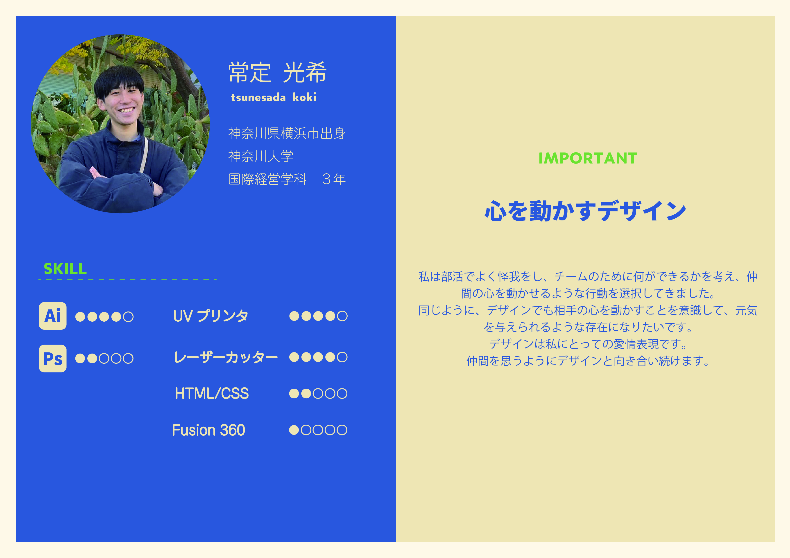
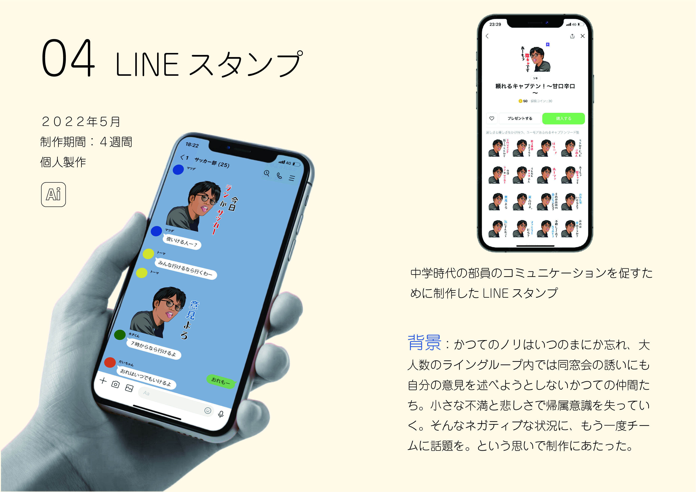
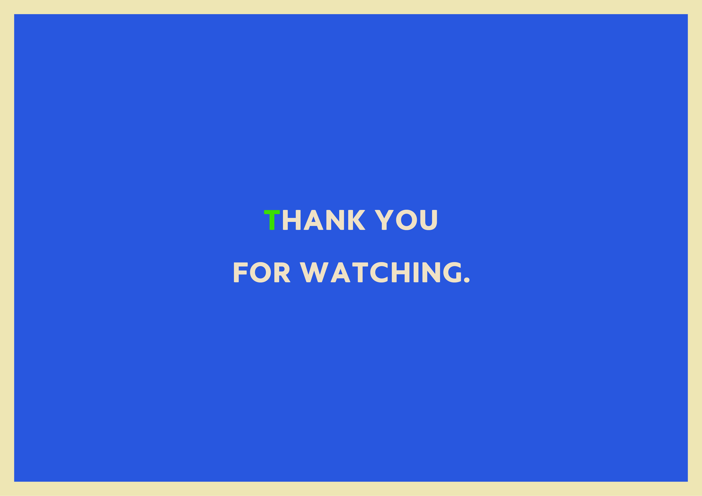

ポートフォリオ








これからも、ものづくりやデザインに関わっていきたいと思ったので、大学で制作してきたものをまとめたポートフォリオを作った。
ポートフォリオのテーマは「贈り物」で、手渡しされているかのように思いを込めている様子を切り取りました。
制作するなかで解決課題や問題を言語化するほど意識して取り組んで来なかったので、それぞれの制作物を
振り返るのにはものすごく時間がかかったし、送り相手らしいデザインとか、テーマにふさわしいデザイン
は取り組みやすいけど、「自分らしい」デザインは今でもよくわからないけど形にするのはとてつもなく
難しかった。
見てもらう
このポートフォリオを井黒さんに見てもらいました。次のようなポイントを指摘してくださいました。
・文字の行間、書簡を合わせる
→フォントに合わせて美しく見える行間書簡などをみんな何度も調整するらしい。・リズムをつくる
→制作物によって色を出すのは大切だけど、反復の中に違いを作ると見やすいみたい。制作期間の位置とか文字の大きさも。・文字が多いい
→パワポみたいになってるから、文字をイラストや記号、図式などにして見やすくするといいみたい。あと余白。これはインフォグラフィックと言って、情報やデータを視覚的に表現するデザイン手法らしい。
・表紙にらしさをいれる
→もっと贈り物らしい表紙にしてもよさそう！井黒さん推薦図書
→デザインするなら絶対持っておきたい本
→字間からタイポグラフィまで丁寧に書かれてるおすすめ本
→口癖になるぐらい結局よはくみたい
改善
12/31今日は井黒さんのアドバイスにあった表紙のデザインを再考した。
井黒さんのアドバイス：ポートフォリオのテーマを表紙でほのめかそう
ポートフォリオのテーマの「贈り物」は手をそれぞれの作品欄で表現しているので、手を取り入れた案を３つ考えた。
テーマ１⃣:フォーカス
→自分のポートフォリオを見てほしいというインパクトを表現

テーマ2⃣:ラストピース
→相手に届ける最後まで丁寧に取り組む姿勢を表現

テーマ3⃣:支える
→デザインに対して愛を持って取り組んでいる温かみのある思いを表現

相手の表情とか状況を常にイメージすることを大切にしてきたので、2個目に決定。